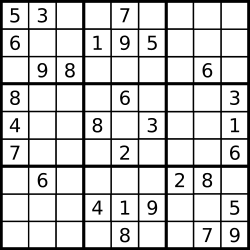

36. 有效的数独
三个 9×9 布尔数组分别记「数字在某行/列/宫是否出现过」，一遍扫 81 格，重复即非法。
思路
row[r][d]、col[c][d]、box[b][d]各是一张「已见过的数字」登记表，下标d = ch - '1'。- 宫编号：
b = r / 3 * 3 + c / 3，把 9 个 3×3 宫映射成 0~8。 - 扫到数字先查三张表，任意一张已登记 → 立即返回 false；否则三处同时登记。
- 只验证已填数字的有效性，
.直接跳过，与是否有解无关。
图解
最优解
1class Solution {2 public boolean isValidSudoku(char[][] board) {3 // row[r][d] / col[c][d] / box[b][d]：数字 d+1 在该行 / 列 / 宫是否出现过4 boolean[][] row = new boolean[9][9], col = new boolean[9][9], box = new boolean[9][9];5 for (int r = 0; r < 9; r++) {6 for (int c = 0; c < 9; c++) {7 char ch = board[r][c];8 if (ch == '.') continue;9 int d = ch - '1';10 int b = r / 3 * 3 + c / 3; // 宫编号：0~8，从左上到右下11 if (row[r][d] || col[c][d] || box[b][d]) return false;12 row[r][d] = col[c][d] = box[b][d] = true;13 }14 }15 return true;16 }17}题目
请你判断一个 9 x 9 的数独是否有效。只需要 根据以下规则 ，验证已经填入的数字是否有效即可。
- 数字
1-9在每一行只能出现一次。 - 数字
1-9在每一列只能出现一次。 - 数字
1-9在每一个以粗实线分隔的3x3宫内只能出现一次。（请参考示例图）
注意：
- 一个有效的数独（部分已被填充）不一定是可解的。
- 只需要根据以上规则，验证已经填入的数字是否有效即可。
- 空白格用
'.'表示。
示例 1：

输入：board = [["5","3",".",".","7",".",".",".","."] ,["6",".",".","1","9","5",".",".","."] ,[".","9","8",".",".",".",".","6","."] ,["8",".",".",".","6",".",".",".","3"] ,["4",".",".","8",".","3",".",".","1"] ,["7",".",".",".","2",".",".",".","6"] ,[".","6",".",".",".",".","2","8","."] ,[".",".",".","4","1","9",".",".","5"] ,[".",".",".",".","8",".",".","7","9"]] 输出：true
示例 2：
输入：board = [["8","3",".",".","7",".",".",".","."] ,["6",".",".","1","9","5",".",".","."] ,[".","9","8",".",".",".",".","6","."] ,["8",".",".",".","6",".",".",".","3"] ,["4",".",".","8",".","3",".",".","1"] ,["7",".",".",".","2",".",".",".","6"] ,[".","6",".",".",".",".","2","8","."] ,[".",".",".","4","1","9",".",".","5"] ,[".",".",".",".","8",".",".","7","9"]] 输出：false 解释：除了第一行的第一个数字从 5 改为 8 以外，空格内其他数字均与 示例1 相同。 但由于位于左上角的 3x3 宫内有两个 8 存在, 因此这个数独是无效的。
提示：
board.length == 9board[i].length == 9board[i][j]是一位数字（1-9）或者'.'
题面取自力扣当前版本。
数据快照 2026-11-04。题面版权归力扣所有，本站点仅供本人学习使用，请勿对外发布。